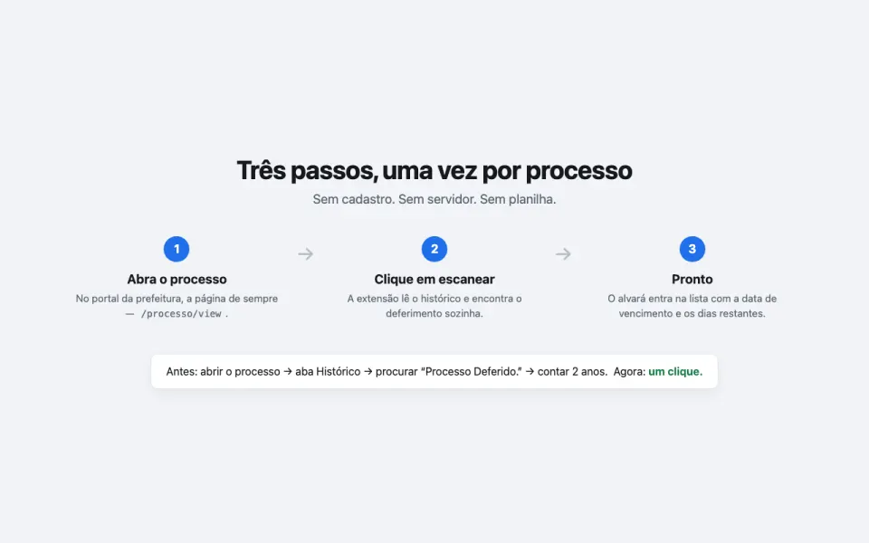

Alvarás
Controle de vencimento. Escaneie a página do processo e acompanhe o vencimento dos seus alvarás de construção em um só lugar.
- Navegadores
- Chrome, Brave, Edge e Opera; Firefox em revisão
- Situação
- Publicada na Chrome Web Store
- Preço
- Gratuita
O problema
Engenheiros civis no Brasil acompanham alvarás de construção pelos portais WGeo das prefeituras. O alvará vale por dois anos contados da data em que foi deferido, mas descobrir essa data significa abrir cada processo e procurar na aba Histórico.
Com vários processos em andamento, conferir os vencimentos vira uma tarefa manual e repetitiva, feita um processo de cada vez.
O que a extensão faz
Na página do processo, um clique em Escanear esta página lê a data de deferimento e calcula o vencimento. Cada alvará escaneado entra em uma lista única, ordenada por quem vence primeiro.
A lista também pode ser exportada em CSV, através do download normal do navegador.
A lista de alvarás, ordenada por quem vence primeiro. 
Um clique sobre a página do processo: nada é lido antes disso.
Privacidade
Sem conta, sem servidor, sem nada transmitido. Tudo o que a extensão lê fica gravado apenas no seu próprio navegador, no seu computador.
A extensão não pede permissão de host: ela só consegue ler uma página no instante em que você clica no botão. Não há acesso permanente a nenhum site, nem a outras abas, nem em segundo plano.
Nenhum analytics, nenhuma telemetria, nenhuma requisição de rede.